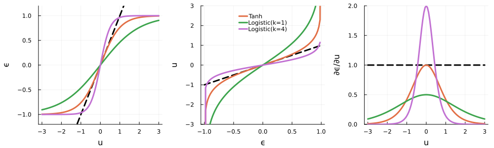
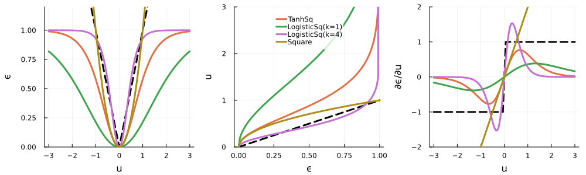

Example 3: Pulse Parametrization
This example is also available as a Jupyter notebook: state_to_state_parametrizations.ipynb.
$\gdef\op#1{\hat{#1}}$ $\gdef\init{\text{init}}$ $\gdef\tgt{\text{tgt}}$
This example illustrates the parametrization of control pulses as a form of amplitude constraint.
const PROJECTDIR = dirname(Base.active_project())
projectdir(names...) = joinpath(PROJECTDIR, names...)
datadir(names...) = projectdir("data", names...)
using QuantumControl
using QuantumControl.Shapes: flattop
using QuantumControl.Generators
using QuantumControl.Controls
using QuantumControl.PulseParametrizations:
SquareParametrization,
TanhParametrization,
TanhSqParametrization,
LogisticParametrization,
LogisticSqParametrization,
ParametrizedAmplitude
using LinearAlgebrausing Plots
Plots.default(
linewidth = 3,
size = (550, 300),
legend = :top,
foreground_color_legend = nothing,
background_color_legend = RGBA(1, 1, 1, 0.8),
)Parametrizations
Symmetric Bounded Controls
Positive (Bounded) Controls
Two-level Hamiltonian
We consider the Hamiltonian $\op{H}_{0} = - \frac{\omega}{2} \op{\sigma}_{z}$, representing a simple qubit with energy level splitting $\omega$ in the basis $\{\ket{0},\ket{1}\}$. The control field $\epsilon(t)$ is assumed to couple via the Hamiltonian $\op{H}_{1}(t) = \epsilon(t) \op{\sigma}_{x}$ to the qubit, i.e., the control field effectively drives transitions between both qubit states.
We we will use
ϵ(t) = 0.2 * flattop(t, T=5, t_rise=0.3, func=:blackman);"""Two-level-system Hamiltonian."""
function tls_hamiltonian(; Ω=1.0, ampl=ϵ)
σ̂_z = ComplexF64[
1 0
0 -1
]
σ̂_x = ComplexF64[
0 1
1 0
]
Ĥ₀ = -0.5 * Ω * σ̂_z
Ĥ₁ = σ̂_x
return hamiltonian(Ĥ₀, (Ĥ₁, ampl))
end;H = tls_hamiltonian();The control field here switches on from zero at $t=0$ to it's maximum amplitude 0.2 within the time period 0.3 (the switch-on shape is half a Blackman pulse). It switches off again in the time period 0.3 before the final time $T=5$). We use a time grid with 500 time steps between 0 and $T$:
tlist = collect(range(0, 5, length=500));function plot_amplitude(ampl, tlist)
plot(tlist, discretize(ampl, tlist), xlabel="time", ylabel="amplitude", legend=false)
end
plot_amplitude(ϵ, tlist)Optimization target
The krotov package requires the goal of the optimization to be described by a list of Objective instances. In this example, there is only a single objective: the state-to-state transfer from initial state $\ket{\Psi_{\init}} = \ket{0}$ to the target state $\ket{\Psi_{\tgt}} = \ket{1}$, under the dynamics of the Hamiltonian $\op{H}(t)$:
function ket(label)
result = Dict("0" => Vector{ComplexF64}([1, 0]), "1" => Vector{ComplexF64}([0, 1]),)
return result[string(label)]
end;objectives = [Objective(initial_state=ket(0), generator=H, target_state=ket(1))]1-element Vector{Objective{Vector{ComplexF64}, QuantumPropagators.Generators.Generator{Matrix{ComplexF64}, typeof(Main.ϵ)}}}:
Objective{Vector{ComplexF64}, QuantumPropagators.Generators.Generator{Matrix{ComplexF64}, typeof(Main.ϵ)}}(…)Square-parametrization for positive pulses
a = ParametrizedAmplitude(
ϵ,
tlist;
parametrization=SquareParametrization(),
parameterize=true
)ParametrizedAmplitude(::Vector{Float64}; parametrization=SquareParametrization())function plot_amplitude(ampl::ParametrizedAmplitude, tlist)
plot(
tlist,
discretize(Array(ampl), tlist),
xlabel="time",
ylabel="amplitude",
legend=false
)
end
plot_amplitude(a, tlist)problem = ControlProblem(
objectives=substitute(objectives, IdDict(ϵ => a)),
lambda_a=5,
update_shape=(t -> flattop(t, T=5, t_rise=0.3, func=:blackman)),
tlist=tlist,
iter_stop=50,
J_T=QuantumControl.Functionals.J_T_ss,
check_convergence=res -> begin
((res.J_T < 1e-3) && (res.converged = true) && (res.message = "J_T < 10⁻³"))
end
);opt_result_positive = @optimize_or_load(
datadir("parametrization#opt_result_positive.jld2"),
problem;
method=:krotov
);opt_result_positiveKrotov Optimization Result
--------------------------
- Started at 2022-10-28T20:42:00.334
- Number of objectives: 1
- Number of iterations: 50
- Value of functional: 3.53585e-02
- Reason for termination: Reached maximum number of iterations
- Ended at 2022-10-28T20:42:04.552 (4 seconds, 218 milliseconds)
We can plot the optimized field:
plot_amplitude(
substitute(a, IdDict(a.control => opt_result_positive.optimized_controls[1])),
tlist
)Tanh-Square-Parametrization for positive amplitude-constrained pulses
a = ParametrizedAmplitude(
ϵ,
tlist;
parametrization=TanhSqParametrization(3),
parameterize=true
)
problem_tanhsq = ControlProblem(
objectives=substitute(objectives, IdDict(ϵ => a)),
lambda_a=10,
update_shape=(t -> flattop(t, T=5, t_rise=0.3, func=:blackman)),
tlist=tlist,
iter_stop=50,
J_T=QuantumControl.Functionals.J_T_ss,
check_convergence=res -> begin
((res.J_T < 1e-3) && (res.converged = true) && (res.message = "J_T < 10⁻³"))
end
);opt_result_tanhsq = @optimize_or_load(
datadir("parametrization#opt_result_tanhsq.jld2"),
problem_tanhsq;
method=:krotov
);opt_result_tanhsqKrotov Optimization Result
--------------------------
- Started at 2022-10-28T20:42:11.014
- Number of objectives: 1
- Number of iterations: 50
- Value of functional: 6.69321e-02
- Reason for termination: Reached maximum number of iterations
- Ended at 2022-10-28T20:42:11.381 (367 milliseconds)
We can plot the optimized field:
plot_amplitude(
substitute(a, IdDict(a.control => opt_result_tanhsq.optimized_controls[1])),
tlist
)Logistic-Square-Parametrization for positive amplitude-constrained pulses
a = ParametrizedAmplitude(
ϵ,
tlist;
parametrization=LogisticSqParametrization(3, k=1.0),
parameterize=true
)
problem_logisticsq = ControlProblem(
objectives=substitute(objectives, IdDict(ϵ => a)),
lambda_a=1,
update_shape=(t -> flattop(t, T=5, t_rise=0.3, func=:blackman)),
tlist=tlist,
iter_stop=50,
J_T=QuantumControl.Functionals.J_T_ss,
check_convergence=res -> begin
((res.J_T < 1e-3) && (res.converged = true) && (res.message = "J_T < 10⁻³"))
end
);opt_result_logisticsq = @optimize_or_load(
datadir("parametrization#opt_result_logisticsq.jld2"),
problem_logisticsq;
method=:krotov
);We can plot the optimized field:
plot_amplitude(
substitute(a, IdDict(a.control => opt_result_logisticsq.optimized_controls[1])),
tlist
)Tanh-parametrization for amplitude-constrained pulses
a = ParametrizedAmplitude(
ϵ,
tlist;
parametrization=TanhParametrization(-0.5, 0.5),
parameterize=true
)
problem_tanh = ControlProblem(
objectives=substitute(objectives, IdDict(ϵ => a)),
lambda_a=1,
update_shape=(t -> flattop(t, T=5, t_rise=0.3, func=:blackman)),
tlist=tlist,
iter_stop=50,
J_T=QuantumControl.Functionals.J_T_ss,
check_convergence=res -> begin
((res.J_T < 1e-3) && (res.converged = true) && (res.message = "J_T < 10⁻³"))
end
);opt_result_tanh = @optimize_or_load(
datadir("parametrization#opt_result_tanh.jld2"),
problem_tanh;
method=:krotov
);plot_amplitude(
substitute(a, IdDict(a.control => opt_result_tanh.optimized_controls[1])),
tlist
)This page was generated using Literate.jl.